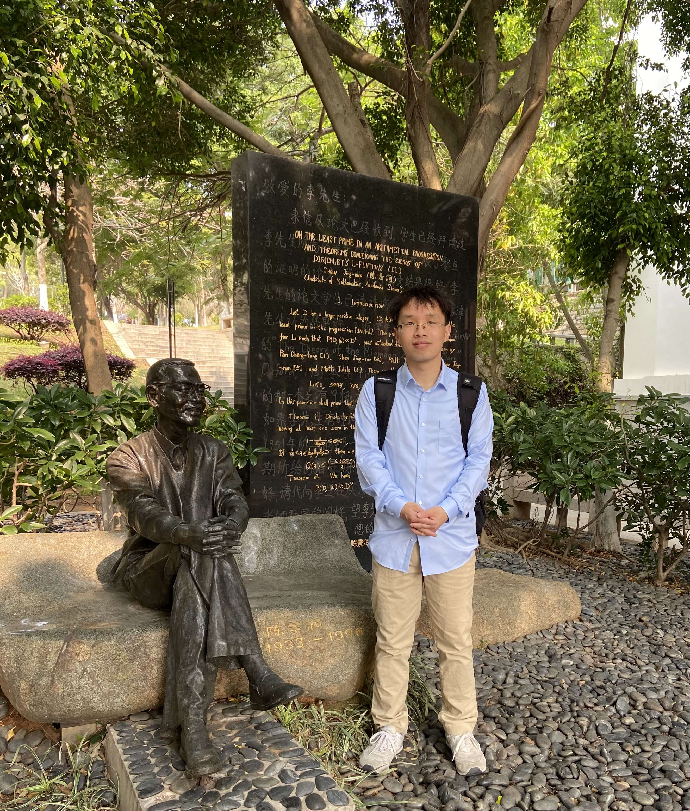

Biao Wang (王标)

Email: bwang(at)ynu.edu.cn
Research Interest: Analytic Number Theory
I am currently an associate professor at the School of Mathematics and Statistics, Yunnan University, Kunming, China. My research interest mainly rests in analytic number theory, additive combinatorics and ergodic theory.
Publications
Here are my research profiles at
arXiv and
ORCID.
- Huixi Li, Biao Wang, Chunlin Wang, Shaoyun Yi. On Erdős covering systems in global function fields. Submitted. (2024), 10 pp. [arXiv].
- Huixi Li, Biao Wang, Shaoyun Yi. On the minimum modulus problem in number fields. Submitted. (2023), 9 pp. [arXiv].
- Huixi Li, Biao Wang, Chunlin Wang, Shaoyun Yi. On covering systems of polynomial rings over finite fields. Proc. Amer. Math. Soc. (2024), 10 pp. accepted. [arXiv].
- Lin Feng, Huixi Li, Biao Wang. Distribution of monomial-prime numbers and Mertens sum evaluations.
Indian J. Pure Appl. Math. (2023), 16 pp. in press. [SharedIt Link, DOI].
- Biao Wang, Zhining Wei, Pan Yan, Shaoyun Yi. Generalizations of the Erdős-Kac Theorem and the Prime Number Theorem. Commun. Math. Stat. (2023), 21 pp, in press. [arXiv, SharedIt Link, DOI].
- Biao Wang. Dynamics on the number of prime divisors for additive arithmetic semigroups. Finite Fields Appl. 81 (2022), 102029, 28 pp. [arXiv, DOI].
- Lian Duan, Biao Wang, Shaoyun Yi. Analogues of Alladi's formula over global function fields. Finite Fields Appl. 74 (2021), 101874, 26 pp. [arXiv, DOI].
- Biao Wang. Analogues of Alladi's formula. J. Number Theory 221 (2021), 232-246. [arXiv, DOI].
- Biao Wang. The Ramanujan sum and Chebotarev densities. Ramanujan J. 55 (2021), 1105-1111. [arXiv, SharedIt Link, DOI].
- Biao Wang. An analogue of a formula for Chebotarev densities. Int. J. Number Theory 16 (2020), no. 7, 1557-1565. [arXiv, DOI].
“Day, night. Calculations, inspiration.” --- The Unravelers: Mathematical Snapshots